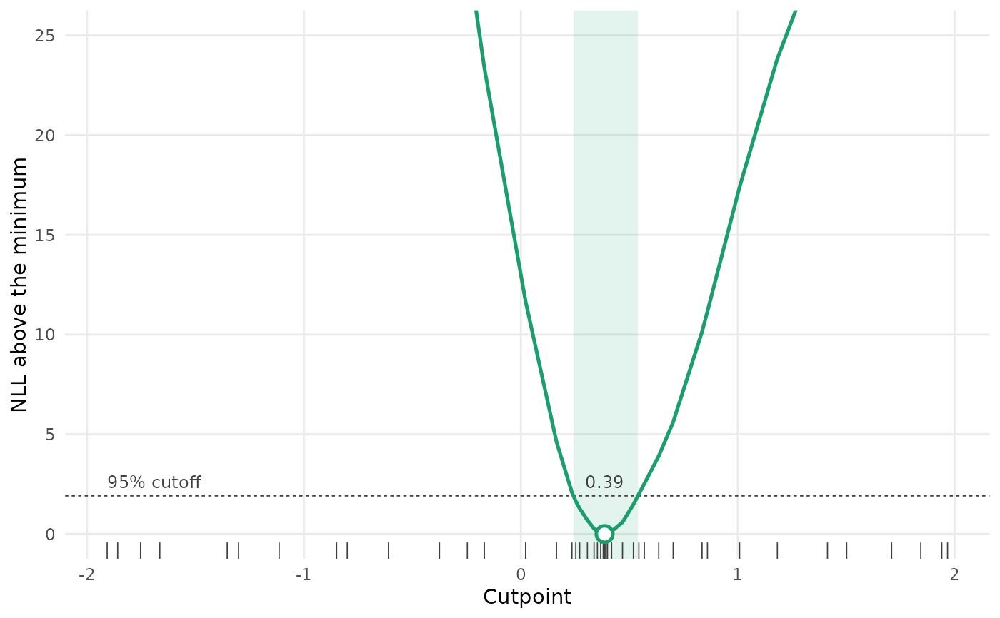

Plots the profile likelihood from profile_breakpt(): the NLL above its
minimum at each cutpoint tried, the cutoff for the confidence interval, the
interval itself, and the best cutpoint. Needs the ggplot2 package.
Arguments
- x
Output from
profile_breakpt().- ylim
Range of the vertical axis. The profile is cut off above it, so the region near the minimum stays readable.
- ...
Not used.
Value
A ggplot object. The shaded band is the confidence interval; if the interval is open at an end, the band runs to the end of the grid. Tick marks along the bottom show the cutpoints tried.
Examples
set.seed(1)
d <- data.frame(x = runif(200, -2, 2))
d$y <- 1 + 1.5 * pmin(d$x, 0.4) + rnorm(200, sd = 0.5)
p <- profile_breakpt(y ~ breakpt(x), data = d, spatial = "off", final = FALSE)
plot(p)
 plot(p, ylim = c(0, 25))
plot(p, ylim = c(0, 25))
